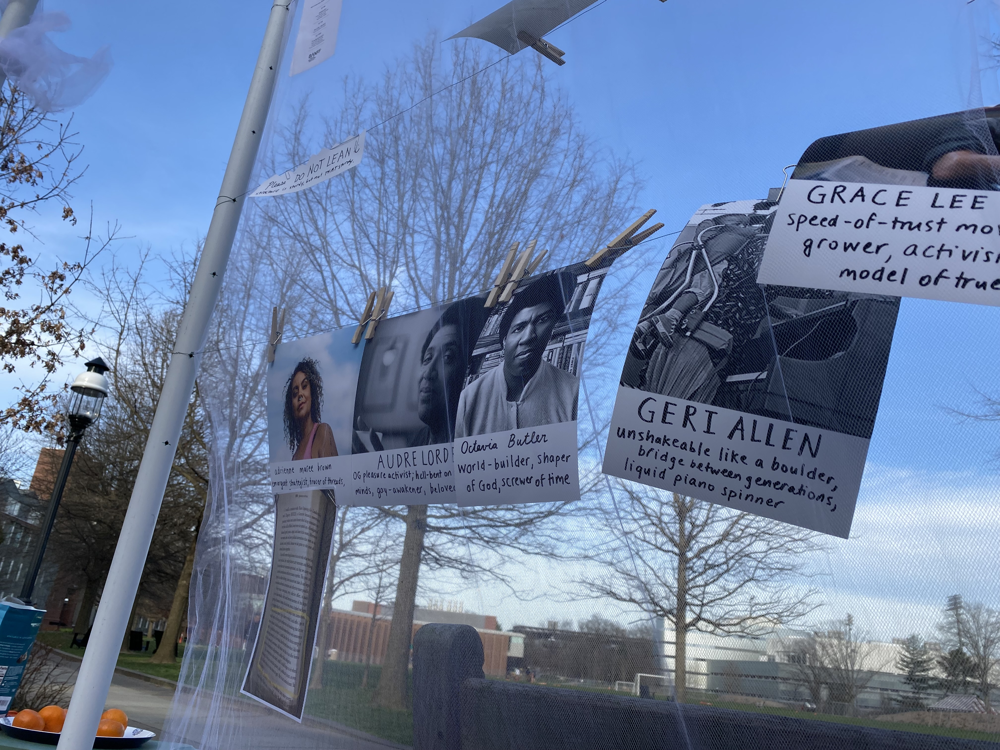
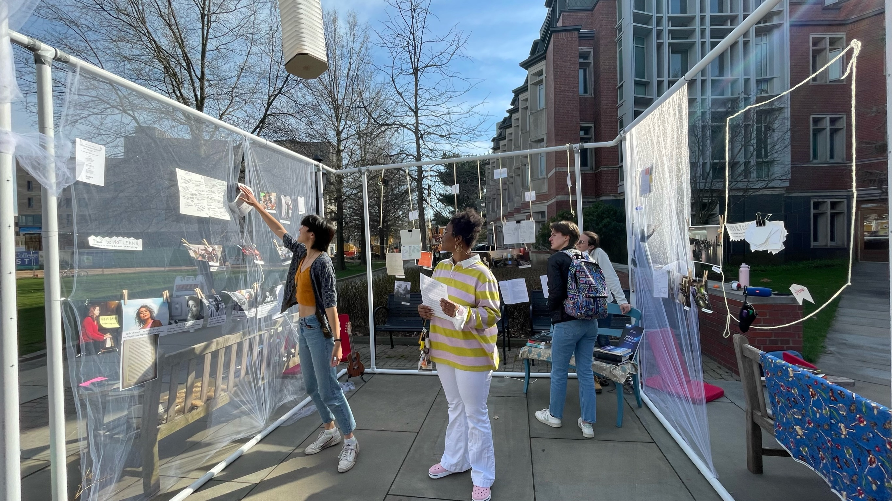
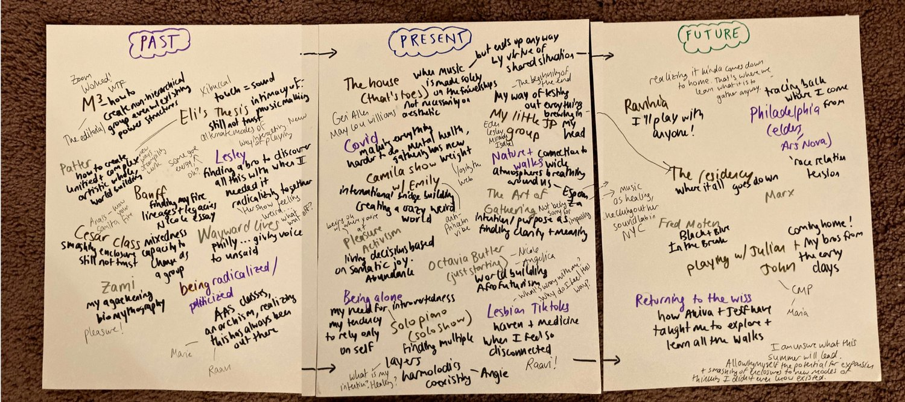
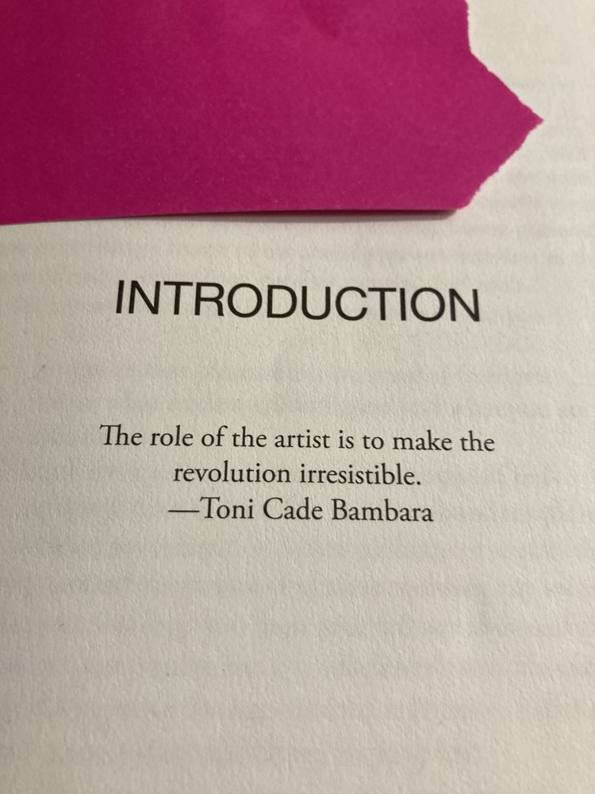
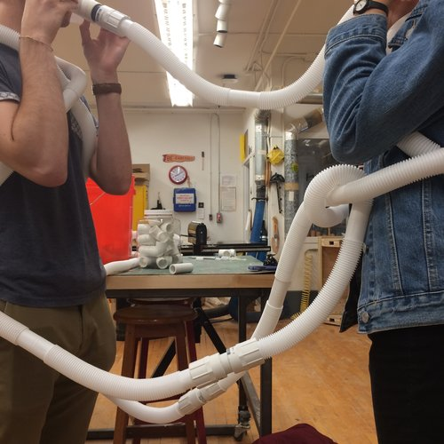
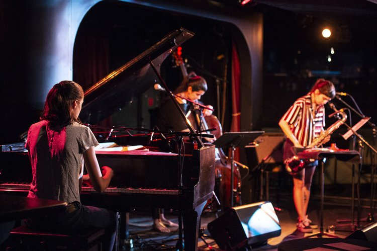
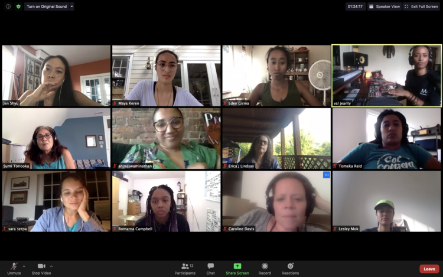
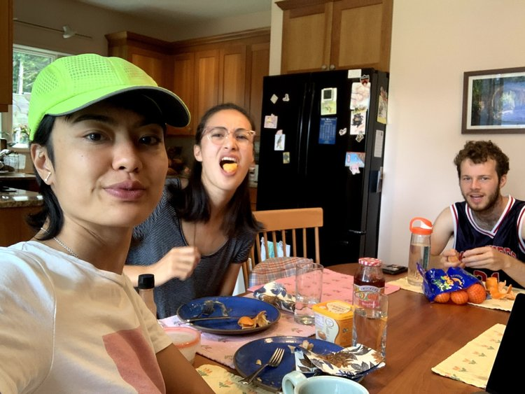
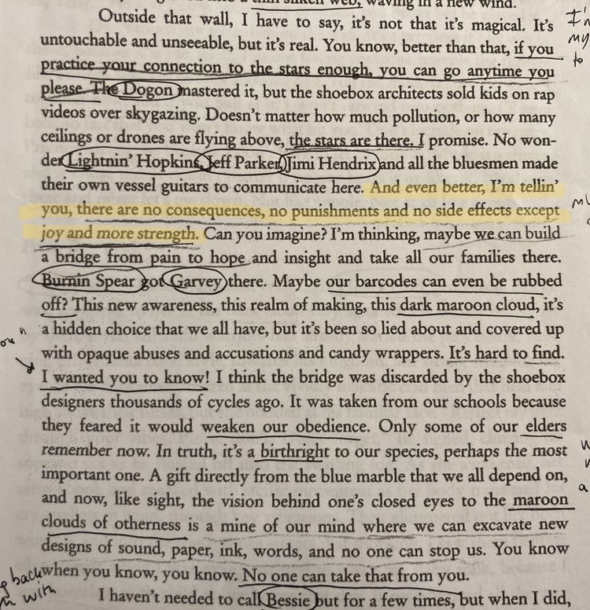

THE STRUCTURE


placeholder for pdf
for my senior thesis work I built a mobile exhibit dedicated to the long lineage of radical environers. I hosted events within/around the space, including a Quaker meeting, a Butch Morris-style conduction, and a musical celebration.
 photos by Eden Girma, featuring Abu, Azia, Lila, and Maya R

CONDUCTION
 Joyce, Maya, Thalia, Zora, Chaya, Raya, Dani, Kyle, Cammie, Emmanuel, Jeff, Brittani, and Dan (photo by Eden, not pictured!)
Joyce, Maya, Thalia, Zora, Chaya, Raya, Dani, Kyle, Cammie, Emmanuel, Jeff, Brittani, and Dan (photo by Eden, not pictured!)
last year my friend Akiva Jacobs and I led weekly conduction sessions at 2d, Princeton’s vegetarian coop. we wanted to create a no-barrier-to-entry music-making space for experienced improvisors and interested friends alike.
“With music I wanted to take a picture of the moment. How could I write music today, take it five thousand miles away, and not only make it reflect what I wrote, but also make it relevant to the environment it would be performed in? To my mind, neither notation, nor improvisation alone could manage that.”
***
“To call Conduction an experiment is a grave error. Any time you synchronize the spirit and still give it liberty, you open many doors to the primus, where the intimate necessity of possibility reigns, where we find and realize our individual and collective freedoms.”
Butch Morris, The Art of Conduction Workbook
E PH E MER A!



Eli Berman's Xibuccal Thesis

Banff with Diana and Camila

Mutual Mentorship for Musicians

Trio Meal with Lesley and Akiva

Nicole Mitchell, What Was Feared Lost